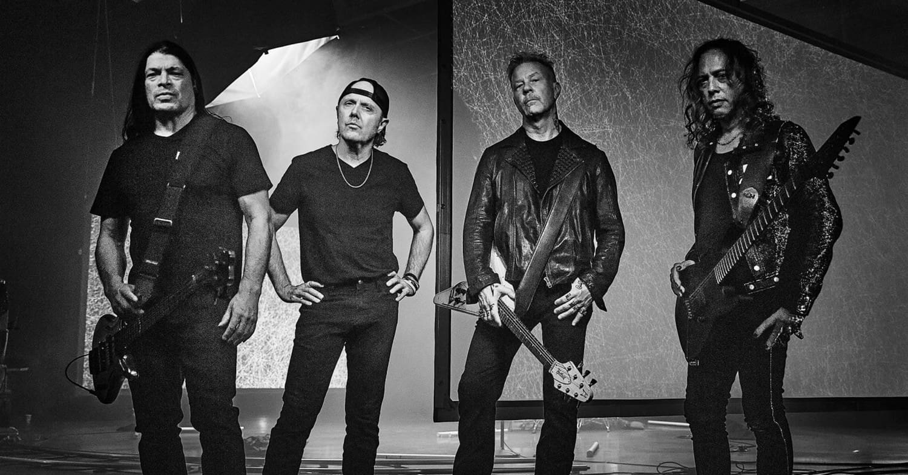
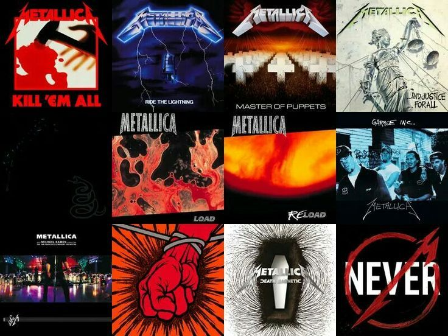

O Metallica
Hoje, o Metallica é uma das bandas mais prestigiadas do mundo. Eles são considerados pioneiros do thrash metal e uma das bandas mais influentes e bem-sucedidas do rock.
Metallica tem uma discografia de 12 álbuns de estúdio, 4 álbuns ao vivo, 10 EPs e 43 singles. Alguns de seus álbuns mais famosos são Master of Puppets (1986), Metallica (1991) e Hardwired (2016). Eles também ganharam nove prêmios Grammy e venderam mais de 125 milhões de discos no mundo todo.
Algumas das melhores músicas do Metallica são One, Enter Sandman, Nothing Else Matters, Master of Puppets e The Unforgiven. Eles também lançaram um novo álbum chamado 72 Seasons em abril de 2023, que aborda temas como suicídio, guerra e meio ambiente.
Metallica é uma banda que continua a surpreender seus fãs com sua musicalidade agressiva, melódica e inovadora. Eles são um ícone do heavy metal e do rock em geral.